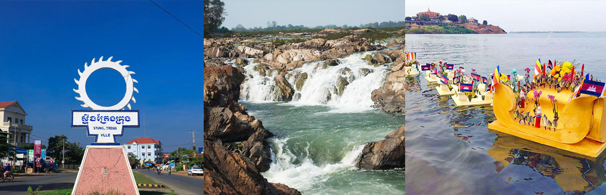

Stung Treng is located on the Sesan River near its confluence with the Mekong River.It's 376 km from Phnom Penh and it's 50 km south of the Laos border. The river port of the city park is fairly busy, handling trade between Cambodia and Laos and transporting people. The city also lies along the National Highway 7. It has two main bridges, the Stung Treng Bridge on the Mekong and the Sekong Bridge on the Sekong river. The city is served by Stung Treng Airport, but currently, there are no regular commercial services.
